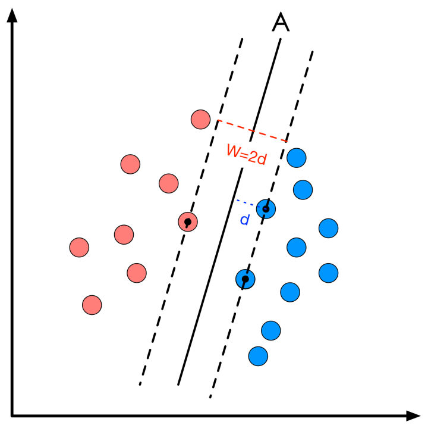
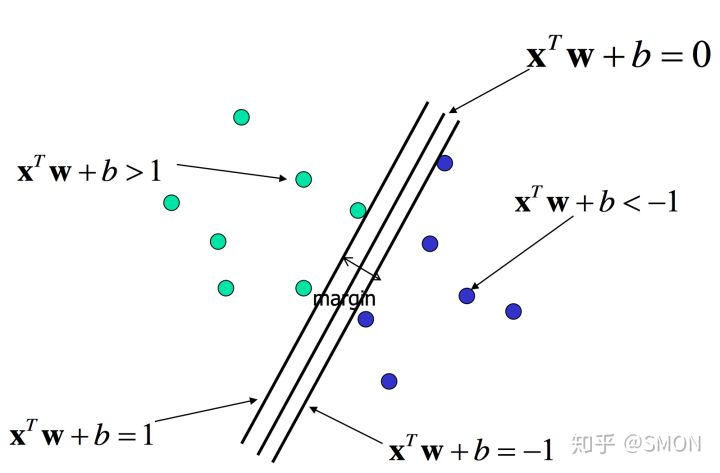

【统计学习】SVM(支持向量机)
1 简介
支持向量积是通过在二维空间确定一条直线，或者在三维空间确定一个平面或者在高维空间确定一个超平面，使确定的直线\平面\超平面到两类数据的距离最大的分类方式。其只适用于二分类。

可以这么理解。旁边的2类数据点是两个村庄。现在我们要在中间修一条路，把两个村庄隔开。这条路越宽越好。
支持向量积在处理分类问题时有3种解决方案。
- 线性可分——使用硬间隔
- 近似线性科峰——使用软间隔
- 线性不可分——使用核技巧
2 线性可分——使用硬间隔

我们希望确定一条直线将两类区分开来。
首先我们需要有个直线的表达式
这个表达式既可以表示直线也可以表示平面也可以表示超平面
之后，想之前说的。我们希望直线离两类的间隔尽可能大。
直线到两类的距离是相等的，于是我们可以
$$
\begin{cases}
W^Tx+b<-1 ,& \text{负类}\\
W^Tx+b>1,& \text{正类}
\end{cases}\tag{2.1.2}
$$
至于为什么是-1和1.只是为了方便。如果是2和-2也可以。不过两边同除2就变成
$0.5W^Tx+0.5b=±1$,又变成1了.对后面优化的优化没有影响。所以为了方便。直接取1.
下面。需要求个间隔,这个间隔很好求，根据平行直线的距离公式即可
$$margin=\rho=\frac{2}{||W||} \tag{2.1.3}$$
$||W||$相当于$\sqrt{w_1^2+w_2^2+...}$
于是现在我们得到一个优化问题
$$\max_{W,b} \rho=\max_{W,b} \rho^2=\min_{W,b}\frac{1}{2}||W||^2\tag{2.1.4}$$
也就是在求1/2||W||最小下W,b的值
然后还有个约束条件
$$
\begin{cases}
W^Tx_i+b\le -1 ,& \text{y_i=-1}\\
W^Tx_i+b\ge 1,& \text{y_i=+1}
\end{cases}\tag{2.1.5}
$$
这个约束表示，对于所有输入数据$x_i$都是能分类的(y=±1),也就是我们现在要修一条最宽的路把两个地区分开，输入一个点，不能让他在这路上。
当然这个约束条件还可以再简洁点，观察可以很容易发现可以写成
$$y_i(W^Tx_u+b)\ge 1 \tag{2.1.6}$$
现在我们已经得到了一个带约束的优化问题，经过优化后就可以得到$\hat W和\hat b$
具体如何优化。见第2.1
2.1 优化
总结一下，到目前我们得到了一个带不等式约束条件的优化问题
$$
\begin{cases}
\max_{W,b}\frac{1}{2}||W||^2\\
s.t.\quad y_i(W^Tx_i+b)\ge 1
\end{cases}\tag{2.1.7}
$$
可以使用拉格朗日乘子法解决
$$L(W,b,\alpha)=\frac{1}{2}||W||^2-\sum_i\alpha_i[y_i(W^Tx_i+b)-1]\tag{2.1.8}$$
对于给定的W,b.
$$
\begin{cases}
max_\alpha L=+\infty,不满足约束\\
max_\alpha L=\frac{1}{2}||W|| ,满足约束
\end{cases}\tag{2.1.9}
$$
>解释：在不满足约束时，$[y_i(W^Tx+b)-1]!=0$,且$\alpha$不定,因此，对此进行最大化优化的话，调整$\alpha$我们可以得到无穷大值
于是，现在我们得到一个等价的优化目标
$$\min_{W,b}\max_\alpha L(W,b,\alpha) \tag{2.1.10}$$
根据拉格朗日对偶性。我们转换为求其对偶问题
$$\max_\alpha \min_{W,b}L(W,b,\alpha) \tag{2.1.11}$$
先来解决$\min_{W,b}L(W,b,\alpha) $
求对W,b的梯度：
$$\nabla_wL(W,b,\alpha)=0=>||W||=\sum_i\alpha_iy_ix_i \tag{2.1.12}$$
$$\nabla_b L(W,b,\alpha)=0=>\sum_i\alpha_iy_i=0\tag{2.1.13}$$
代入原式就得
$$L(W,b,\alpha)=\sum_i{\alpha_i}-\frac{1}{2}\sum_{i,i=1}^ny_iy_j\alpha_i\alpha_jx_i^Tx_j$$
然后取负数求min
$$\min_\alpha (\sum_i{\alpha_i}-\frac{1}{2}\sum_{i,i=1}^ny_iy_j\alpha_i\alpha_jx_i^Tx_j)$$
约束条件
$$\alpha_i\ge0$$
$$\sum_{i=1}^n\alpha_iy_i=0$$
接下来进行优化，就可以得到$\hat \alpha$
然后得到$\hat W=\sum_{i=1}^n\hat\alpha_iy_ix_i$
KKT条件
!!$\alpha_i不可能全为0,不然\frac{2}{||W||}=\infty$